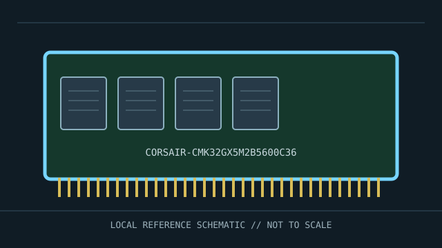

[ MANUFACTURER MODEL // MEMORY / RAM ]
Corsair Vengeance CMK32GX5M2B5600C36
Specific Corsair Vengeance two-module desktop kit. This is a named manufacturer product or kit, not a general DDR standard overview. Specifications below are limited to information published for the model.

MODEL ID: Corsair Vengeance CMK32GX5M2B5600C36. Confirm the full model number, suffix, revision and SPD against the actual specimen before relying on compatibility or timing claims.
Model specifications
| Manufacturer / product | Corsair Vengeance CMK32GX5M2B5600C36 |
|---|---|
| Product class | Specific Corsair Vengeance two-module desktop kit |
| Source-backed configuration | 32 GB kit comprising two 16 GB DDR5 UDIMMs; DDR5-5600, CL36, 1.25 V rated profile per Corsair product listing. The high-speed profile is not guaranteed on every CPU/board. |
| Platform compatibility | Requires a DDR5 desktop platform supporting the module capacity and validated profile. Install the matched kit in recommended slots; default JEDEC operation and XMP operation may differ. Not compatible with DDR4. |
| Variant boundaries | Only values cited for this exact SKU are stated. Unlisted timings, ranks, organization, or sub-revision differences must be checked against the specimen label, SPD and manufacturer data. |
Compatibility & service notes
- Requires a DDR5 desktop platform supporting the module capacity and validated profile. Install the matched kit in recommended slots; default JEDEC operation and XMP operation may differ. Not compatible with DDR4.
- Power down before removal, use ESD precautions, handle by the edges, and never force a memory module into a keyed socket.
- Identify ECC and buffering independently: ECC UDIMM, RDIMM, and LRDIMM have distinct platform support requirements. DDR5 on-die ECC is not system-level ECC.
- Check CPU/controller support, motherboard or server service manual, firmware, module capacity/density, slot population and supported data rate. Physical fit is not proof of compatibility.
Archival record fields
A kit model, not a single 32 GB DIMM. Preserve both module labels, kit box/serial, SPD and XMP profile, and system tested; do not mix kit members with unrelated modules. Preserve label photographs, SPD data, full SKU, revision/date code, host configuration, BIOS/BMC version and test results. When installed, record slot and channel location.
Manufacturer & standards sources
- Corsair — CMK32GX5M2B5600C36 product pageManufacturer source for the named product; use full part number and revision to verify the specimen.
- JEDEC — DDR5 SDRAM standardGeneration-level standards context; the product listing identifies the module-specific data.
Manufacturer pages are the model-specific source; JEDEC pages define generation-level context. For a preserved machine, its vendor manual and validated memory support list take precedence over generic fit claims.